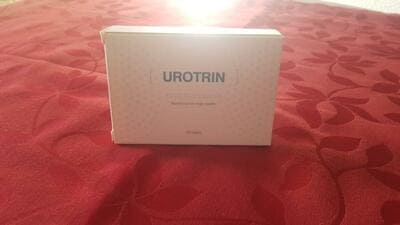

Odborník na genitourinární terapii: inkontinence moči u žen je nebezpečná patologie. Dnes je však možné jej odstranit doma.
Zánět močového měchýře je jedním z nejčastějších ženských patologií. Podle statistik každá třetí žena do 24 let a každá druhá do 50 let čelí tomuto problému jednou za rok nebo častěji.
Nejnebezpečnější v této patologie je to, že pokud ji včas neodstraníte, časem se to výrazně zhorší kvalita života: pohlavní styk bude doprovázen nepohodlí a bolestí, nutkání bude častější a riziko komplikací se zvýší.
Nicméně, s pomocí moderních prostředků, zbavit se této patologie je snadné. O moderních terapiích říká jeden z nejlepších odborníků na terapii genitourinárního systému v Česku, vědec, člen české Akademie věd a umění, profesor — Václav Kopeček.
- Václave, jak nebezpečný je zánět močového měchýře pro ženy?
Ve skutečnosti mnoho žen ani netuší, že se staly oběťmi této patologie a podceňují její následky. Mnozí doufají, že časem to zmizí. Ale to nikdy jen tak nezmizí. V průběhu času může patologie přerůst v chronickou formu, která je plná častých relapsů a závažnosti průběhu. Bolestivé močení začíná obtěžovat člověka stále častěji, někdy dokonce zcela zbavuje jeho možnosti normálně žít a pracovat. Člověk se stává lhostejným ke všemu, protože myslí jen na nutkání a cítí řezavé a někdy i nesnesitelné bolesti v inguinální oblasti.
Hlavním nebezpečím této patologie je však skutečnost, že při absenci léčby mohou nastat nebezpečné důsledky:
- močovina může začít proudit v opačném směru - z močového měchýře do ledvin. To může vést k zánětu močovodu, ledvin a v průběhu času k zánětu dělohy. V zanedbaných stavech se moč hromadí v ledvinách, což vyvolává peritonitidu a zánět peritonitidy;
- často v močovém měchýři se mohou vytvořit jizvy, abscesy, v důsledku toho se objem močového měchýře zmenšuje, dochází k častému močení, tvoří se hnisy;
- nervové zakončení se mohou zanítit inervující močový měchýř. Často dochází k zánětu trojúhelníku, který se nachází mezi močovodem a močovou trubicí močové trubice;
- porušení reprodukční funkce, vzhledem k tomu, že dlouhodobý zánět sliznice močového měchýře, zejména v akutní fázi, může vést k spontánnímu potratu nebo neplodnosti.
Také v chronických stadiích může zánět močového měchýře přerůst v zhoubný nádor. Pokud si to včas nevšíměte, může to skončit smrtí.
Takovým způsobem žena, která bojuje se zánětem močového měchýře pomocí neúčinných prostředků (nebo vůbec nebojuje), žije s časovanou bombou. A upřímně nechápu, proč to ženy dělají. Nyní existují poměrně účinné způsoby, jak bojovat proti této nemoci. Jen po jedné kúře na tento problém můžete na dlouho zapomenut.
- Myslíte chirurgické metody?
- Samozřejmě, že ne. A ještě víc, chci všechny odradit od podobných operací. Včetně použití laseru. I přes vysokou rychlost manipulace (kterými kliniky a podvodníci chtějí přilákat peníze), tyto operace mají mnoho negativních důsledků pro zdraví žen, protože to je operace a každou chvíli se něco může pokazit. Může jít o infekci nebo komplikaci. Ale nejdůležitější nevýhodou operace je, že ve skutečnosti je to jen kosmetické řešení problému - důsledky patologie, nikoliv její příčiny.
Protože příčina zůstává a problém se znovu objeví v budoucnu. A už brzy.
A k odstranění zánětu močového měchýře je třeba se zbavit příčiny problému. Nejčastěji stačí odstranit bakterie, které pronikly do močového systému.
Během operace se provádí přenos vnějšího otvoru močové trubice do vyšší polohy, která zabraňuje infekci. Bakterie se ale stále množí. To vede k opakování problému. Proto jsem přestala doporučovat chirurgickou léčbu inkontinence.
- Co byste doporučil nyní k odstranění zánětu močového měchýře?
- Existuje velmi dobrý evropský produkt s názvem . Je speciálně vytvořen pro léčbu tohoto stavu a jednoduše ukazuje fenomenální účinnost - pomáhá téměř všem!
Má tři důležité akce:
- Pomáhá odstraňovat zánětlivé procesy, bojovat proti infekcím a bakteriím.
- Je schopen vyčistit krev a zvýšit zásobování genitourinárního systému kyslíkem a vitamíny. Pomáhá obnovit práci těla jako celku.
- Pomáhá předcházet pronikání bakterií do močového traktu a zabraňuje recidivám.
V tomto případě zánět zmizí velmi rychle - několik dní po zahájení kúry u. Chcete-li odstranit příznaky a jejich příčinu, obvykle stačí jedna kúra. Ve vzácných případech může být zapotřebí trochu víc.
Výrobek je nový a velmi účinný - byl vyvinut v Litvě. Na jeho tvorbě se podíleli nejlepší vědci světa.
Také může být použit k léčbě různých problémů s močením.
- Tento produkt se prodává na předpis? Pokud chcete zahájit terapii, musíte jít nejdříve za odborníkem?
- Velkou výhodou u je skutečnost, že kúru můžete absolvovat doma. Každý ví, že ženy (stejně jako muži) nepospíchají s tím, aby se obrátily na odborníka s takovou citlivou otázkou. Stydí se a je to nepříjemné. S em to nemusíte udělat!
se prodává bez předpisu. Jedná se o přírodní produkt složený z rostlinných výtažků. Obsahuje brusinkový extrakt, heřmánkový extrakt, extrakt z kopřivy, borovicový extrakt, hořčíkové soli mastných kyselin a další.
Deoarece orice chimie este exclusă în produs, poate fi luat fără pericolul de a vă afecta sănătatea. Adică, este ideal pentru luarea la domiciliu.
Vzhledem k tomu, že složení výrobku je vyloučeno z jakýchkoli chemikálií, není návykový a má příznivější účinek na tělo než antibiotika.
Kromě hlavního účinku nabízí řadu dalších:
- Zmírňuje zánět
- Zabraňuje infekcím močových cest
- Urychluje a usnadňuje vylučování moči
- Pomáhá vyrovnat se s kandidózou
- Zvyšuje imunitu těla
- Zlepšuje krevní oběh v pánevních orgánech
- Poskytuje tělu velké množství vitamínů a stopových prvků.
- Václave, kolik stojí tento nástroj a v jakých lékárnách ho lze koupit?
- V lékárnách se zboží bohužel neprodává. Pokud vím, distributor a lékárenské řetězce se nedokázaly dohodnout na podmínkách prodeje. Prostředek je účinný, to znamená, že jiné prostředky k odstranění zánětu močového měchýře se budou prodávat hůř, lékárnici navrhli prodávat prostředek s vysokou přirážkou. Distributor s tím ale nesouhlasil. Proto v Česku v lékárnách nenajdeme. Je možné si ho však objedna na oficiálních stránkách.
je poměrně drahý nástroj - jeho obvyklá cena je docela vysoká. Ale podařilo se nám získat finanční pomoc od soukromých společností a koupit velkou dávku produktu, díky čemuž mají české ženy šanci ZÍSKAT s 50% slevou.
Akce ale platí jen do 30 Octombrie.
To znamená, že před tímto datem je nutné založit žádost na oficiálních stránkách. Doporučuji využít této příležitosti všem ženám, které trpí zánětem močového měchýře. Po několika týdnech užívání přípravku můžete na tento problém zapomenout.
Mimochodem, opět o jeho účinnosti. Nyní na webu provádíme průzkum mezi zákazníky, kteří již vyzkoušeli . Průzkumu se již zúčastnilo více než 2000 žen. Otázka zní takto: " vám pomohl zbavit se inkontinence?»
Výsledky průzkumu:
- Ano, problém se podařilo vyřešit - 96,7% respondentů
- Částečně pomohlo, bylo to mnohem lepší, ale problém zůstal - 2,6% respondentů
- Vůbec mi to nepomohlo - 0,3% respondentů
- Obtížné odpovědět - 0,4% respondentů
Jak můžete vidět, pomáhá téměř všem!
- Václave, děkuji mockrát za rozhovor. Možná chcete našim čtenářům říct ještě něco?
- Chci popřát všem dobré pohody. Dávejte si na své tělo pozor! Jakoukoli patologii v raných fázích se dá odstranit mnohem jednodušeji. Včetně zánětu močového měchýře! Přeji vám hodně zdraví!
Marcela Vytlačilová
Díky za doporučení. Objednala jsem si . Sleva opravdu platí. Slyšela jsem o tom prostředku spoustu dobrých věcí. V lékárnách se mi ho najít nepodařilo. Teď už chápu proč.
Prostředek je opravdu velmi dobrý. Mám zánět močového měchýře více než 3 roky. Brála jsem nejlepší antibiotika, ale nic nepomohlo! Pouze mi pomohl. Vše je nyní v pořádku. Radím ho všem. 
Jaroslava Ungerová
Několik dní úlevy - a maximálně za týden vše začíná znovu! Neustálé strašné nepohodlí a bolesti mám takové, že chci křičet. Po utrpení pak zase musíš za odborníkem, poté k dalšímu. Předepisuje další antibiotika. Píchají mi injekce. Myslíte-no, několik kúř by mělo fungovat, vždyť tyto bakterie nejsou věčné. Ale všechno pak začíná od začátku. Asi před dvěma měsíci jsem se dozvěděla o u. Hodně mi pomohl!
Julie Brychová
Nezkoušela jsem to, ale moje přítelkyně říkala, že jsem se dostala na padělek u, takže je lepší opravdu koupit na oficiálních stránkách.
Mám zánět močového měchýře, žádné síly. Na záchod běhám každých 15 minut, stydím se toho před kolegy, do domu jedu se zastávkami na WC. O osobním životě nebudu ani začínat... Doufám, že tento nástroj pomůže.
Hana Jaklová
Operace mi nepomohla, všechny příznaky se vrátily, ale je jiná věc. Je to dobrý prostředek!
Helena Mirgová
Děkuju! Musím si to objednat.
Nechápu, proč se cystitida často opakuje: nohy jsou vždy suché, kabát je dlouhý. Proč se tyto záchvaty vyskytují? Možná je to psychosomatika? Co dělat, co mám brát, aby se tato noční můra již neopakovala? Jak žít, takhle žít ale nejde??? Včera mi doručili balíček s em, doufám, že pomůže.
Nikola Karlová
mi pomohl zapomenout na bolesti a časté nutkání na toaletu! Předtím jsem zkoušel různé prostředky, ale pomohl mi pouze ten prostředek.
Barbora Knapová
Je to pravda o té operaci. Kolegovi z práce je 56 let. Loni podstoupila operaci. Byla šťastná deset měsíců a pak to začalo znovu. Přitom se po operaci dlouho zotavovala.
Dříve jsem si myslela, že mohou mi pomoci pouze antibiotika, ale mě přesvědčil o tom, že je to právě naopak. Teď chodím na záchod bez bolesti a ne tak často. A celkově se věci nějakým způsobem zlepšily. Mám pocit, že zánět je pryč.
Adéla Šperlová
Stihl jsem si to objednat ve slevě! Reklamy prý zůstalo jen málo. Takže doporučuji s tím pospíšit.
Andrea Patáková
To je opravdu něco! mi také pomohl! Vyřešil problém, kterým jsem trpěla mnoho let !! Moc děkuji za tento článek! Je to teprve čtrnáct dní a už se cítím lépe.
Patricie Švecová
Díky za užitečné informace!!!